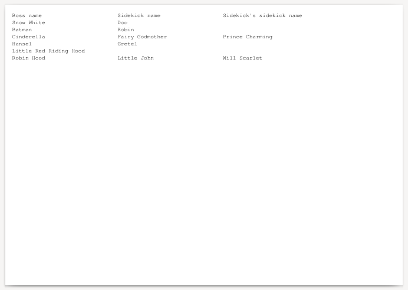

This example below exercises two N:1 (N-to-one) follower queries along with the main query. For more information, see Follower queries.
The same data is used as in the previous example.
The query that the RLIB compatible method for N:1 followers in this report simulates is:
ocrpttest=> select * from data ocrpttest-> left outer join lateral (select * from more_data ocrpttest-> where data.id = more_data.boss_id ocrpttest-> order by more_data.id limit 1) x on (true) ocrpttest-> left outer join lateral (select * from moar_data ocrpttest-> where x.id = moar_data.sk_id ocrpttest-> order by moar_data.sk_id limit 1) y on (true); id | name | id | boss_id | name | sk_id | name ----+------------------------+----+---------+-----------------+-------+----------------- 1 | Snow White | 1 | 1 | Doc | | 2 | Batman | 8 | 2 | Robin | | 3 | Cinderella | 9 | 3 | Fairy Godmother | 9 | Prince Charming 4 | Hansel | 12 | 4 | Gretel | | 5 | Little Red Riding Hood | | | | | 6 | Robin Hood | 13 | 6 | Little John | 13 | Will Scarlet (6 rows)
Note the amount of hoops the SQL query has
to jump through to implement the LIMIT 1
clause on both lateral derived queries that results
in limiting the number of rows to the main query's
number of rows.
The program code is identical to the previous example, except that it uses a different report XML description.
#include <stdio.h>
#include <opencreport.h>
int main(int argc, char **argv) {
opencreport *o = ocrpt_init();
ocrpt_datasource *ds = ocrpt_datasource_add_postgresql(o, "pgsql", NULL, NULL, "ocrpttest", "ocrpt", NULL);
ocrpt_query *q1 = ocrpt_query_add_postgresql(ds, "q1", "select * from data order by id;");
ocrpt_query *q2 = ocrpt_query_add_postgresql(ds, "q2", "select * from more_data order by id;");
ocrpt_query *q3 = ocrpt_query_add_postgresql(ds, "q3", "select * from moar_data order by sk_id;");
ocrpt_expr *match = ocrpt_expr_parse(o, "q1.id = q2.boss_id", NULL);
ocrpt_query_add_follower_n_to_1(q1, q2, match);
ocrpt_expr *match2 = ocrpt_expr_parse(o, "q2.id = q3.sk_id", NULL);
ocrpt_query_add_follower_n_to_1(q2, q3, match2);
if (!ocrpt_parse_xml(o, "example7.xml")) {
printf("XML parse error\n");
ocrpt_free(o);
return 0;
}
ocrpt_set_output_format(o, OCRPT_OUTPUT_PDF);
ocrpt_execute(o);
ocrpt_spool(o);
ocrpt_free(o);
return 0;
}}
Here's the equivalent program code in PHP.
<?php
$o = new OpenCReport();
$ds = $o->datasource_add_postgresql("pgsql", NULL, NULL, "ocrpttest", "ocrpt", NULL);
$q1 = $ds->query_add("q1", "select * from data order by id;");
$q2 = $ds->query_add("q2", "select * from more_data order by id;");
$q3 = $ds->query_add("q3", "select * from moar_data order by sk_id;");
$match1 = $o->expr_parse("q1.id = q2.boss_id");
$q1->add_follower_n_to_1($q2, $match1);
$match2 = $o->expr_parse("q2.id = q3.sk_id");
$q2->add_follower_n_to_1($q3, $match2);
if (!$o->parse_xml("example7.xml")) {
echo "XML parse error" . PHP_EOL;
exit(0);
}
$o->execute();
$o->spool();
Here's the equivalent program code in PHP, using the RLIB compatibility functions. Note that the RLIB compatible API is more limited as it expects a single field name matching.
<?php
$r = rlib_init();
rlib_add_datasource_postgres($r, "pgsql", "dbname=ocrpttest user=ocrpt");
rlib_add_query_as($r, "pgsql", "select * from data order by id;", "q1");
rlib_add_query_as($r, "pgsql", "select * from more_data order by id;", "q2");
rlib_add_query_as($r, "pgsql", "select * from moar_data order by sk_id;", "q3");
rlib_add_resultset_follower_n_to_1($r, "q1", "id", "q2", "boss_id");
rlib_add_resultset_follower_n_to_1($r, "q2", "id", "q3", "sk_id");
if (!rlib_add_report($r, "example7.xml")) {
echo "XML parse error" . PHP_EOL;
exit(0);
}
rlib_execute($r);
rlib_spool($r);
The program code uses this file contents
from example7.xml.
It is different in one detail from the previous
example: the toplevel XML node is
<Report> instead of
<OpenCReport>.
This results in the RLIB compatibility flag
to be enabled automatically. See the
Follower match single attribute
or the equivalent calls in the C and PHP API
documentation.
<?xml version="1.0"?>
<!DOCTYPE report >
<Report orientation="landscape">
<Detail>
<FieldHeaders>
<Output>
<Line>
<literal width="30">Boss name</literal>
<literal width="1"/>
<literal width="30">Sidekick name</literal>
<literal width="1"/>
<literal width="30">Sidekick's sidekick name</literal>
</Line>
</Output>
</FieldHeaders>
<FieldDetails>
<Output>
<Line>
<field value="q1.name" width="30" align="left" />
<literal width="1"/>
<field value="q2.name" width="30" align="left" />
<literal width="1"/>
<field value="q3.name" width="30" align="left" />
</Line>
</Output>
</FieldDetails>
</Detail>
</Report>

Note that compared to
RLIB,
OpenCReports likely do not
produce the same output. This is due to the incomplete
and faulty implementation of follower queries in
RLIB. OpenCReports
faithfully implements LEFT OUTER JOIN
with limiting the number of dependent matching rows to 1
that approximates the RLIB behaviour.